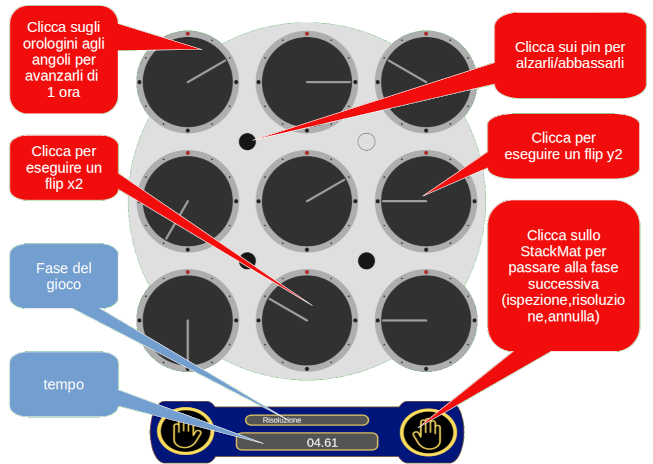

Il suo scopo principale è l'esercizio del metodo di memorizzazione 7simul (BPaul)
Per avviare il gioco cliccare sullo Stackmat
Nella prima fase, l'ispenzione, il clock è viene reso disponibile per l'analisi. Di solito in questa fase avviene la memorizzazione.
Per passare alla risoluzione cliccare sullo Stackmat, cliccare invece sul clock per ruotarlo
Nella fase di solve bisogna portare tutti gli orologini a mezzogiorno su entrambi i lati del clock
